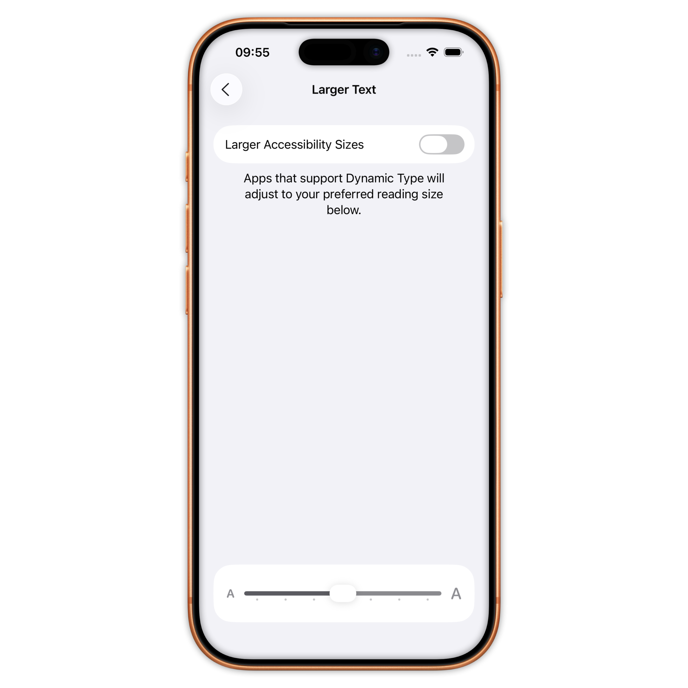
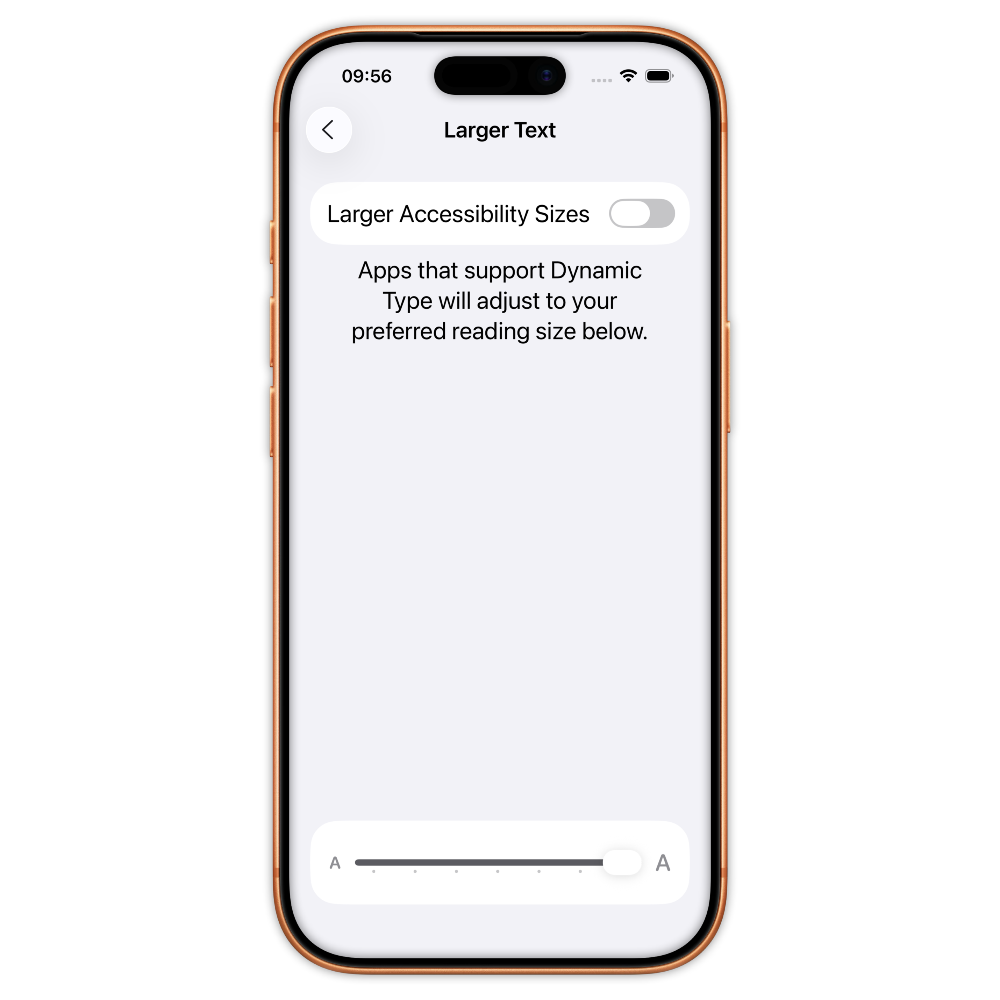
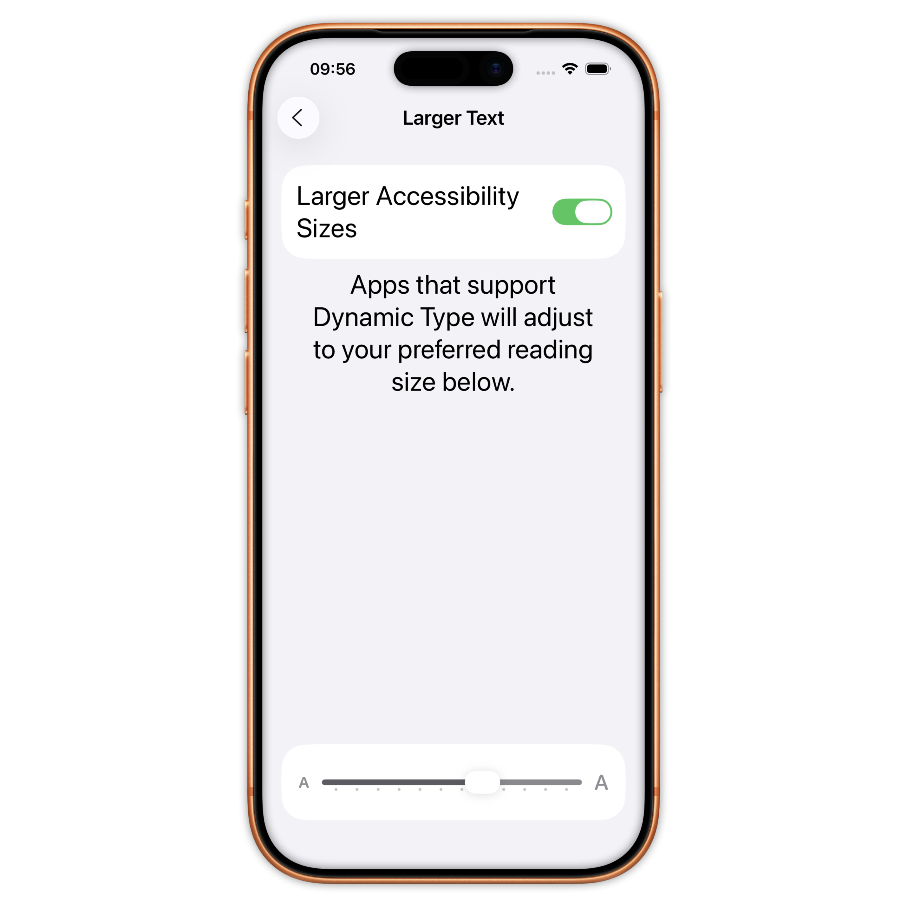
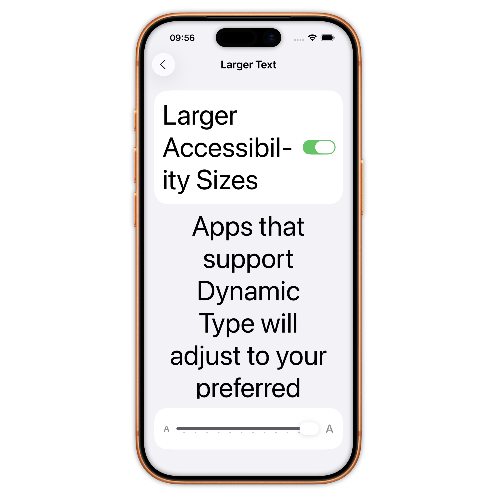

Press 'Space' to continue
Press 'n' to show/hide notes
Press 's' for speaker mode
Large(default) / XXXL / Accessibility Medium / Accessibility XXXL
   Scaled font based on text style
public extension UIFont {
static let title = UIFont.preferredFont(for: .title1)
static func preferredFont(for style: TextStyle) -> UIFont {
let metrics = UIFontMetrics(forTextStyle: style)
let descriptor = UIFontDescriptor.preferredFontDescriptor(withTextStyle: style)
let font = UIFont(descriptor: fontDescriptor, size: pointSize)
return metrics.scaledFont(for: font)
}
}
Mapping between SwiftUI and UIKit
private extension Font.Weight {
init(uiFontWeight: UIFont.Weight) {
switch uiFontWeight {
case .ultraLight: self = .ultraLight
case .thin: self = .thin
...
default: self = .regular
}
}
}
private extension Font.TextStyle {
init(uiTextStyle: UIFont.TextStyle) {
switch uiTextStyle {
case .largeTitle: self = .largeTitle
case .title1: self = .title
...
default: self = .body
}
}
}
Detect accessibility mode
@Environment(\.dynamicTypeSize) var dynamicTypeSize
...
dynamicTypeSize.isAccessibilitySize // true starting accessibility medium
Scaled metrics
@ScaledMetric private var cellHeight: CGFloat = 42
Tool: Rocket Sim
Contrast ratio should be over 4.5
We can use the Accessibility Checker tool
Github: benjdum59
Website: benjdum59.github.io
Mail: benjamin.dumont.pro@gmail.com
Go to Homepage